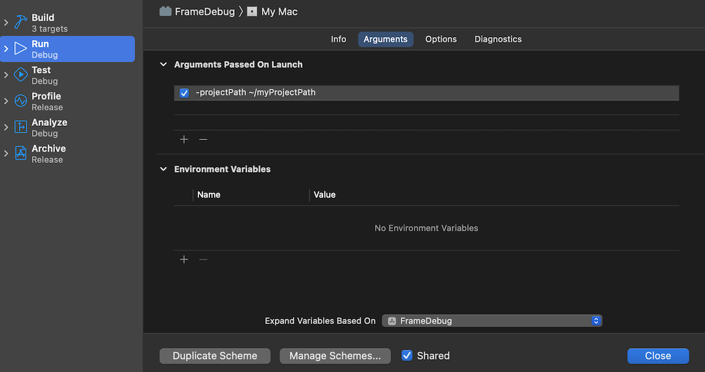

The Xcodeframe debugger tool lets you capture a frame of your application to see the commands that the GPU performed during that frame, examine data in GPU memory, and identify bottlenecks in your shadersA program that runs on the GPU. More info
See in Glossary. This lets you analyze GPU performance in fine detail.
Unity integrates with the Xcode frame debugger in the following ways:
Important:
To use the Xcode frame debugger to capture a frame from do one of the following:
This section describes how to launch your application and perform a frame capture using the Xcode UI or the FrameCapture API. This workflow is supported on all platforms that use Metal.
1. Create an Xcode project.
You can either create an Xcode project from the Unity Editor, or use any other Xcode project to launch macOS applications.
To build an Xcode project from the Unity Editor:
To use another Xcode project to launch macOS applications:
2. Edit the Xcode project scheme so that you can perform frame captures.
Either, use the Xcode GUI. To do this, follow the Enabling Frame Capture guide in the Xcode documentation to set your project scheme’s GPU Frame Capture setting to Metal.
You can also use the XcScheme API to configure an Xcode project scheme, which is useful for automated builds. For more information, see the XcScheme API documentation.
3. Launch your project from Xcode, and perform a frame capture.
In Xcode, press the Frame Capture button (camera icon) to capture the next frame of data.
You can also use the FrameCapture API to perform a frame capture from a script. For information on analyzing frame capture data in Xcode, see the Xcode frame debugger documentation.
This section describes how to launch your application from the command line, perform a frame capture using the FrameCapture API, and save the results to disk. Important: This workflow isn’t supported on iOS. To perform frame captures on iOS, you must always launch your application from Xcode.
-enable-metal-capture. Xcode performs frame captures when your code requests them, and saves the results to disk.For information on how to analyze this data in Xcode, see Apple’s Xcode frame debugger documentation.
On macOS, you can use Xcode frame debugger to analyze frames from the Unity Editor. If you use Xcode to launch the Unity Editor, you can request frame captures from the Unity Editor UI.
Follow these steps to launch the Unity Editor from Xcode and perform a frame capture using the Unity Editor UI, the Xcode UI, or the FrameCapture API. You can analyze the frame capture immediately, or save the results to disk. This workflow is supported on macOS.
Preqrequisite: If the Unity Editor is open, close it.
-projectPath. This is to prevent the Unity Hub from opening when Xcode launches the Editor and instead directly debug the Editor with your project.

FrameCapture API. For more information, see the FrameCapture API documentation.
For information on analyzing frame capture data in Xcode, see Apple’s Xcode frame debugger documentation.This workflow describes how to launch the Unity Editor from the command line, use the FrameCapture API to perform a frame capture, and save the frame capture to disk. This workflow is supported on macOS.
-enable-metal-capture. Xcode performs frame captures when your code requests them, and saves the results to disk.For information on how to analyze this data in Xcode, see the Xcode frame debugger documentation.